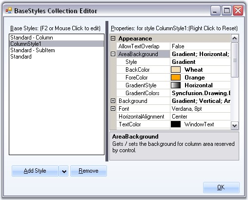

Standard - Column style is default style that will applied for all the columns of the MultiColumnTreeView control. The style settings can be edited by the user.
Column Style Properties
The below properties controls the appearance of the columns.
|
TreeColumnAdv Property |
Description |
|
AllowTextOverlap |
Indicates whether the text can overlap or not. By default it false. |
|
AreaBackground |
Gets / sets the background for the column area. |
|
Background |
Sets the background for the column (column header). |
|
Font |
Sets the foreground style for the columns. |
|
HorizontalAlignment |
Sets the horizontal alignment of the text in the columns. |
|
TextColor |
Sets the text color for the columns. |
|
Vertical Alignment |
Sets the vertical alignment of the text in the columns. |
|
BaseStyle |
Sets the base style to be applied to the column. |
|
Width |
Specifies Column width. |
|
Border3DStyle |
Sets the 3D border style for the column. |
|
BorderColor |
Border color for the column. |
|
BorderSides |
Specifies the sides of the column which should have border. |
|
BorderStyle |
Sets 2D or 3D border. The options are,
· FixedSingle and · Fixed3D. |
|
BorderSingle |
Specifies the 2D border style for the columns, when BorderStyle is set to Fixed Single. The options are,
· Dotted, · Dashed, · Solid, · Inset and · Outset. |
Adding ColumnStyle
The editor also lets you add user defined column styles like other styles as follows.

Figure 1202: New ColumnStyle1 Added
The user-defined column style can be applied to any of the columns, using Columns Editor. This setting overrides the default settings.

Figure 1203: Column Style applied by using the Columns Editor